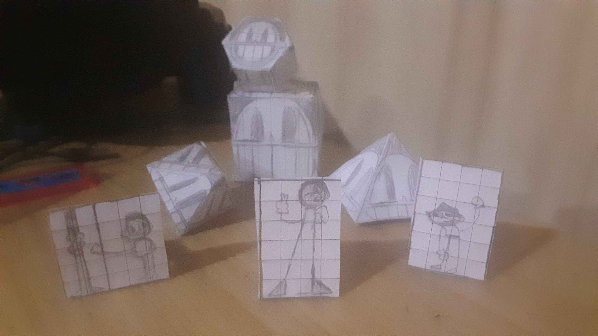
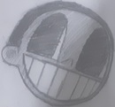

Who I am and what this is.


Welcome to my world(primarily a website)! I go by the pen name of Stephen Pete Hurlsmith.
I am an 11 year old writer. I write mostly general fiction and sometimes fantasy. I am currently working on
a long time novel project called 'Crow Kid.' It's a fun story about crows and shapeshifters, and maybe even
crowshifters hehehehe.
Here in this personal site I put up what I want to put up here, like maybe a blog post on an interesting topic or event, maybe
some stories that I write, or really anything I have to show like some memories or passion projects
I make all for the purpose of memory.
I know that nobody will visit this website because it is set under a domain so inaccessible it would mean that
somebody would have had to tell you about the website, maybe even send you a hyperlink that leads to this site.
To you, I am Stephen Hurlsmith, and I say hello, and maybe even goodbye.
The origin of this website.
I originally took this domain to make a website of my own by the name of Turtoi after turtles or whatever, so remember this isn't a finger dipping in owning a website I have right now. I made it with a friend of mine . Originally none of us had anything or a point for this website anyway. The website was just a bit similar to this website excepta little less effortful than expected =/ ...
I brought in a "Public Journal" page that sort of was like similar to a blog except it had to be weekly and it was strictly on events rather than topics. Call it a "Neo-blog" if you will. Another thing it had was some downloads to little tiny games I made that were about cookies or something. That was really what separated it from any static websites(probably dead by now lol).
What's left of this.
Welp, whatever it is. It's nice to see you have read about me and it's nice to see you. Visit soon maybe, there'll always be something for new for store. And even if you get bored, there's already a discussion forum for you to talk in. Remember not to be a dock-off.